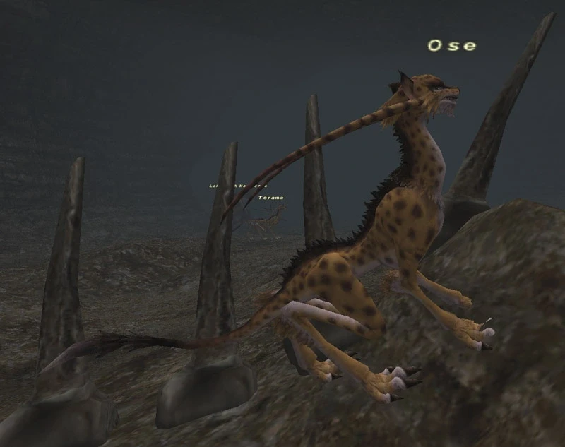
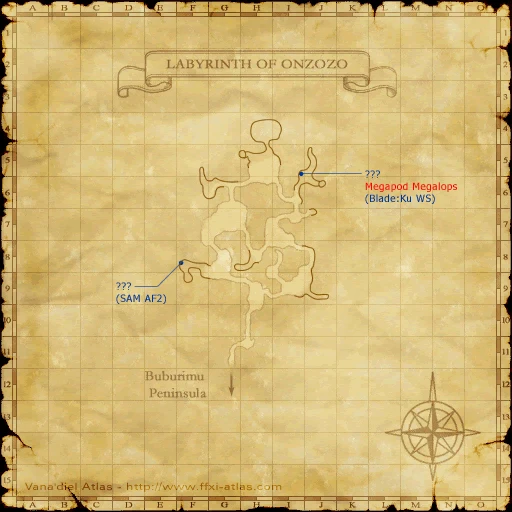

Level 75 reference · Zenith rules
|
Family: Coeurls Notorious Monster |
 Image source |


| Zone | Level | Drops | Steal | Spawns | Notes |
|---|---|---|---|---|---|
| Labyrinth of Onzozo | 74-76 | 1 | A, S, Sc | ||
|
HP = Detects Low HP; M = Detects Magic; Sc = Follows by Scent; T(S) = True-sight; T(H) = True-hearing JA = Detects job abilities; WS = Detects weaponskills; Z(D) = Asleep in Daytime; Z(N) = Asleep at Nighttime | |||||


Image source
Notes
- Lottery Spawn from the Torama around (H-6).
- The true placeholder is one of the last two Torama in the cluster of 8 Torama in the Wide Scan, though which one is random.
- The true placeholder's spawn point will change after each kill. If the Torama that you kill respawns in a different location, it is a good inclination you have the correct placeholder.
- Ose tends to spawn on the west side of the room, next to the giant fish bones (approximately 95% of the time).
- The average spawn time for Ose is 1-3 hours, though it has been to known to take over 4 hours to spawn.
- Susceptible to Weight, Bind and Sleep.
- Uses Coeurl special attacks (Chaotic Eye and Blaster) and has an additional effect of Paralyze on normal attacks.
- Killable by an alliance of 12 level 61 characters or a party of 6 level 64 characters; Soloable by most jobs at level 75 (some form of Paralyna and Silena is recommended)
- Drops around 6,000 gil.
- Assault Jerkin seems to have a low drop rate.
- Lottery Spawn from the Torama around (H-6).
Adapted from Eden Wiki: Ose · Contributors and history · CC BY-SA 4.0. Revision 1839. Layout, links and optional background text adapted for Zenith.